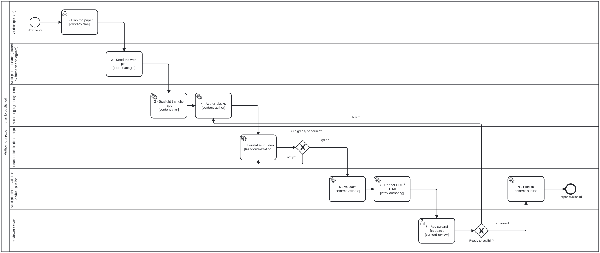

Tutorial — writing a paper with folio-assistant
This tutorial walks through authoring a rigorous scientific paper with an LLM driving folio-assistant: the agent plans the paper, drafts blocks, formalizes theorems in Lean 4, renders LaTeX, and publishes — while you steer.
It uses a small running example — “A note on the harmonic series” — purely to illustrate the workflow. The content is not the point; the formalism and the LLM workflow are.
- The end-to-end workflow
- Before you start
- Step 1 — Plan the paper
- Step 2 — Scaffold the repository
- Step 3 — Author the content
- Step 4 — Formalize in Lean
- Step 5 — Validate
- Step 6 — Render
- Step 7 — Review & feedback
- Step 8 — Publish
- What you end up with
- Where to go deeper
The end-to-end workflow

BPMN 2.0 source · full-size SVG
{kind=link}
Every step is something the LLM does for you by calling folio-assistant’s MCP tools — you converse in natural language and approve the work. Approve is literal: steps 3–5 are a loop, and the assistant’s edit is a proposal until you have seen the validation findings and accepted it. The publication workflow models that gate, and the review and release that follow, as BPMN swimlane diagrams.
Before you start
- Install folio-assistant and run
bun run check-deps. For papers you wantbun,latexmk/texlive, and Lean (elan). - Connect your LLM harness (Claude Code, Antigravity, …) so the agent has the MCP tools.
- Create an (empty) content repository for your paper and add a
folio.config.jsonwith"contentType": "paper".
Step 1 — Plan the paper
Start by asking the agent to load the planning skill and propose a structure.
Behind the scenes it calls skill_fetch content-plan.
You: I want to write a short paper, “A note on the harmonic series”. It should define the partial sums, state and prove that the series diverges, and include one worked example. Plan it out.
Assistant: (loads
content-plan) Here’s a proposed plan:
prose— Introduction & motivationdefinitiondef:harmonic-partial-sum— the partial sum $H_n$theoremthm:harmonic-diverges— $H_n \to \infty$proofprf:harmonic-diverges— Oresme’s grouping argumentexampleex:H4— compute $H_4$The definition and theorem will get Lean counterparts. Shall I scaffold the repo and create these blocks as drafts?
You: Yes, go ahead.
This is also where you’d open work-plan items so the plan survives across sessions:
beans create "Draft harmonic-series paper: blocks + Lean"
beans <id> --status in-progress
Step 2 — Scaffold the repository
The agent creates the block files and a main.tex, then confirms with
content_list.
Required .gitignore baseline
Every new folio repository starts with these entries. They are not optional
polish — agent sandboxes accumulate scratch directories as untracked state, and
a single git add -A then commits all of it under a message describing
something else. In the qou folio that mechanism produced one commit adding
46,155 files / 11.4 M insertions under a one-file Lean subject line,
including 14,688 duplicate beans.
# Agent scratch state — transient tooling state, never repository content.
# Leading slash = root-level only. Keep it (see the warning below).
/.agents/
/amalgamated_done/
/amalgamated_input/
/_deprecated/
/scratch/
.claude/worktrees/
# Python bytecode
__pycache__/
*.py[cod]
Keep the leading slashes. A gitignore pattern containing no internal slash
matches at every directory depth, not just the root. Written unanchored, the
_deprecated/ line above silently captured two documented archives in the qou
folio — computations/_deprecated/ (1,449 tracked files, including
script-qa/*.script-qa.json QA sidecars) and docs/audits/_deprecated/ (66) —
and scratch/ reached every content/**/scratch/. Already-tracked files were
unaffected, because an ignore rule never untracks; the hazard is that any new
file under such a path is skipped by git add with no error and no output. If
your folio keeps a nested archive or scratch area under one of these names, the
anchored form is what keeps it committable.
Two deliberate exclusions:
.beans/stays tracked. It is the durable, cross-session work plan; a sibling agent has to be able to read it. Bean duplication is prevented by the create-guard inskills/folio-core/todo-manager.md, not by ignoring the directory.- Any directory your folio documents as a real pipeline stays tracked — in
qou,uploads/is the document-intake stage and belongs in git. Check your ownAGENTS.md§Project structure before adding a path to this list: if it is documented there, it is content, not scratch.
Assistant: (creates blocks, calls
content_list) Scaffolded 5 blocks undercontent/harmonic-series/. Current artifacts:content/harmonic-series/ ├── 00-intro.prose.md ├── 10-def-partial-sum.definition.md ├── 20-thm-diverges.theorem.md ├── 21-prf-diverges.proof.md └── 30-ex-h4.example.md
Each block carries typed front-matter validated against the content-object model. A definition block, for example:
---
kind: definition
id: def:harmonic-partial-sum
title: Harmonic partial sum
lean: HarmonicSeries.partialSum
---
For $n \ge 1$, the *$n$-th harmonic partial sum* is
$$ H_n = \sum_{k=1}^{n} \frac{1}{k}. $$
Step 3 — Author the content
Ask the agent to draft prose and statements; review and refine conversationally.
You: Draft the introduction and the divergence theorem statement.
Assistant: (loads
content-author, edits the blocks) Done. The theorem reads: “The sequence $(H_n)$ is unbounded; equivalently $\sum 1/k$ diverges.” I kept the statement Lean-friendly so it maps cleanly toFilter.Tendsto.
A mock of the chat-driven authoring session:

Step 4 — Formalize in Lean
Now the agent sets up Lean and formalizes the definition and theorem, calling
lean_setup, lean_build, and lean_check.
You: Formalize the definition and theorem in Lean and make it build.
Assistant: (loads
lean-formalization; callslean_setup) Toolchain ready (Lean 4.16.0). I added:namespace HarmonicSeries def partialSum (n : ℕ) : ℝ := ∑ k ∈ Finset.range n, 1 / (k + 1 : ℝ) theorem diverges : ¬ ∃ B, ∀ n, partialSum n ≤ B := by sorry -- Ref: [oresme] grouping argument(calls
lean_build) Build is green with 1sorryremaining. (callslean_status) Proof coverage: 1/2 blocks fully proved.You: Discharge the sorry using the grouping bound.
Assistant: (edits,
lean_build) ✅ Build green, 0 sorries.proof-verificationreports the axiom set is clean (nosorryAx).
sequenceDiagram
participant You
participant LLM as Assistant
participant MCP as folio-assistant
You->>LLM: Formalize + make it build
LLM->>MCP: lean_setup
MCP-->>LLM: toolchain ready
LLM->>MCP: lean_build
MCP-->>LLM: green, 1 sorry
LLM->>MCP: lean_check / lean_status
MCP-->>LLM: coverage 1/2
You->>LLM: discharge the sorry
LLM->>MCP: lean_build
MCP-->>LLM: green, 0 sorries
Step 5 — Validate
Validation checks every block against its schema and the project’s constraint rules (label prefixes, required Lean links, citation resolution, …).
You: Validate the whole paper.
Assistant: (calls
content_validate) All 5 blocks valid. Constraints:def:block has its required Lean link ✓, theorem has a proof block ✓, example references a defined symbol ✓.
Step 6 — Render
The agent renders a PDF (and/or HTML) with the paper adapter.
You: Render the PDF and show me a preview.
Assistant: (calls
paper_render_pdf, thenpaper_preview) Renderedharmonic-series.pdf(3 pages). Preview below.

You can set rendering preferences (engine, scope, math renderer) via the
paper_preferences tool:
You: Use lualatex and render only the theorem section next time.
Assistant: (calls
paper_preferences action=set latex_engine=lualatex render_scope=section) Saved.
Step 7 — Review & feedback
Reviewer feedback is captured in the feedback store and routed back into the
authoring loop (content-review / content-feedback).
You: A reviewer says the example should also show $H_8$. Log it and address it.
Assistant: (records feedback, edits
ex:H4→ adds $H_8$, re-validates, re-renders) Done; feedback item resolved.
Step 8 — Publish
Finally, publish the rendered artifacts. In CI this is the publish workflow;
locally the agent runs content_build and the render tools, then commits.
You: Publish it.
Assistant: (loads
content-publish,content_build, commits + pushes) Published. PDF, HTML, and the Lean blueprint are built; the work-plan item is marked resolved.
beans <id> --status resolved
What you end up with
- A paper as a tree of typed, validated blocks
- A Lean 4 formalization with zero
sorrys and a clean axiom audit - PDF + HTML renders and an interactive blueprint
- A reproducible CI pipeline (validate → build → render → publish)
Where to go deeper
- Content types — papers & books
- Skill contracts:
latex-authoring,lean-formalization,proof-verification - TypeScript API reference — the block model in detail
- Architecture — how the paper adapter is wired
Note on the screenshots. The images above are mockups illustrating the chat-driven workflow and the viewer. Replace them with real screenshots from your own session under
docs/assets/img/to keep the tutorial current.